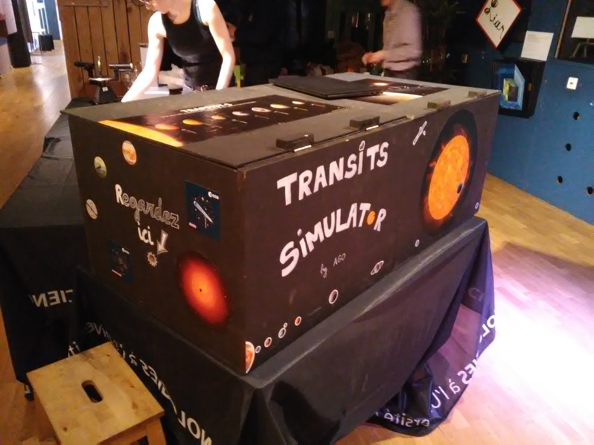
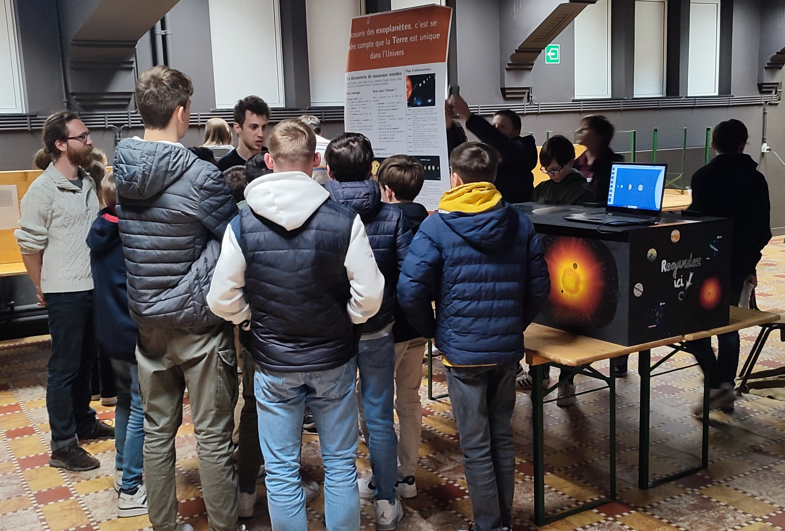
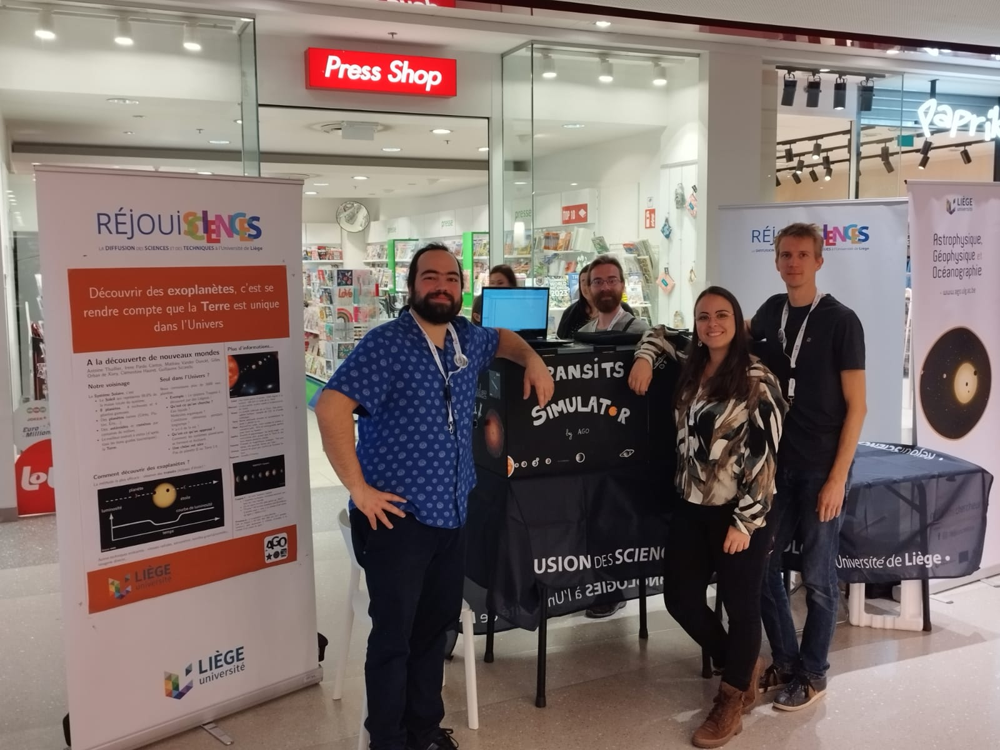

Nos ateliers thématiques
A l'heure actuelle, nous proposons un atelier "A la découverte des exoplanètes"
dans lequel nous abordons la façon dont il est possible de détecter des planètes autour
d'autres étoiles que notre Soleil grâce à la méthode des transits.
Pour cela, nous avons fabriqué notre Transit Simulator, un simulateur de transits d'exoplanètes permettant de reproduire de façon réaliste les observations accessibles à l'heure actuelle aux chercheurs du domaine. Autour de ce simulateur, nous avons développé un atelier qui peut être décliné en différents niveaux, allant de la fin de l'école primaire jusqu'à des travaux pratiques réalisés par des étudiants en bachelier à l'université.
Pour cela, nous avons fabriqué notre Transit Simulator, un simulateur de transits d'exoplanètes permettant de reproduire de façon réaliste les observations accessibles à l'heure actuelle aux chercheurs du domaine. Autour de ce simulateur, nous avons développé un atelier qui peut être décliné en différents niveaux, allant de la fin de l'école primaire jusqu'à des travaux pratiques réalisés par des étudiants en bachelier à l'université.


